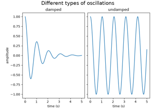

matplotlib.lines.Line2D#
- class matplotlib.lines.Line2D(xdata, ydata, *, linewidth=None, linestyle=None, color=None, gapcolor=None, marker=None, markersize=None, markeredgewidth=None, markeredgecolor=None, markerfacecolor=None, markerfacecoloralt='none', fillstyle=None, antialiased=None, dash_capstyle=None, solid_capstyle=None, dash_joinstyle=None, solid_joinstyle=None, pickradius=5, drawstyle=None, markevery=None, **kwargs)[source]#
Bases:
ArtistA line - the line can have both a solid linestyle connecting all the vertices, and a marker at each vertex. Additionally, the drawing of the solid line is influenced by the drawstyle, e.g., one can create "stepped" lines in various styles.
Create a
Line2Dinstance with x and y data in sequences of xdata, ydata.Additional keyword arguments are
Line2Dproperties:Property
Description
a filter function, which takes a (m, n, 3) float array and a dpi value, and returns a (m, n, 3) array and two offsets from the bottom left corner of the image
float or None
bool
antialiasedoraabool
BboxBaseor Nonebool
Patch or (Path, Transform) or None
CapStyleor {'butt', 'projecting', 'round'}JoinStyleor {'miter', 'round', 'bevel'}sequence of floats (on/off ink in points) or (None, None)
(2, N) array or two 1D arrays
{'default', 'steps', 'steps-pre', 'steps-mid', 'steps-post'}, default: 'default'
{'full', 'left', 'right', 'bottom', 'top', 'none'}
color or None
str
bool
object
{'-', '--', '-.', ':', '', ...} or (offset, on-off-seq)
float
marker style string,
PathorMarkerStylefloat
markersizeormsfloat
None or int or (int, int) or slice or list[int] or float or (float, float) or list[bool]
bool
list of
AbstractPathEffectfloat or callable[[Artist, Event], tuple[bool, dict]]
float
bool
(scale: float, length: float, randomness: float)
bool or None
CapStyleor {'butt', 'projecting', 'round'}JoinStyleor {'miter', 'round', 'bevel'}unknown
str
bool
1D array
1D array
float
See
set_linestyle()for a description of the line styles,set_marker()for a description of the markers, andset_drawstyle()for a description of the draw styles.- contains(mouseevent)[source]#
Test whether mouseevent occurred on the line.
An event is deemed to have occurred "on" the line if it is less than
self.pickradius(default: 5 points) away from it. Useget_pickradiusorset_pickradiusto get or set the pick radius.- Parameters:
- mouseevent
MouseEvent
- mouseevent
- Returns:
- containsbool
Whether any values are within the radius.
- detailsdict
A dictionary
{'ind': pointlist}, where pointlist is a list of points of the line that are within the pickradius around the event position.TODO: sort returned indices by distance
- draw(renderer)[source]#
Draw the Artist (and its children) using the given renderer.
This has no effect if the artist is not visible (
Artist.get_visiblereturns False).- Parameters:
- renderer
RendererBasesubclass.
- renderer
Notes
This method is overridden in the Artist subclasses.
- drawStyleKeys = ['default', 'steps-mid', 'steps-pre', 'steps-post', 'steps']#
- drawStyles = {'default': '_draw_lines', 'steps': '_draw_steps_pre', 'steps-mid': '_draw_steps_mid', 'steps-post': '_draw_steps_post', 'steps-pre': '_draw_steps_pre'}#
- fillStyles = ('full', 'left', 'right', 'bottom', 'top', 'none')#
- filled_markers = ('.', 'o', 'v', '^', '<', '>', '8', 's', 'p', '*', 'h', 'H', 'D', 'd', 'P', 'X')#
- get_aa()[source]#
Alias for
get_antialiased.
- get_dash_capstyle()[source]#
Return the
CapStylefor dashed lines.See also
set_dash_capstyle.
- get_dash_joinstyle()[source]#
Return the
JoinStylefor dashed lines.See also
set_dash_joinstyle.
- get_data(orig=True)[source]#
Return the line data as an
(xdata, ydata)pair.If orig is True, return the original data.
- get_drawstyle()[source]#
Return the drawstyle.
See also
set_drawstyle.
- get_ds()[source]#
Alias for
get_drawstyle.
- get_fillstyle()[source]#
Return the marker fill style.
See also
set_fillstyle.
- get_gapcolor()[source]#
Return the line gapcolor.
See also
set_gapcolor.
- get_linestyle()[source]#
Return the linestyle.
See also
set_linestyle.
- get_linewidth()[source]#
Return the linewidth in points.
See also
set_linewidth.
- get_ls()[source]#
Alias for
get_linestyle.
- get_lw()[source]#
Alias for
get_linewidth.
- get_marker()[source]#
Return the line marker.
See also
set_marker.
- get_markeredgecolor()[source]#
Return the marker edge color.
See also
set_markeredgecolor.
- get_markeredgewidth()[source]#
Return the marker edge width in points.
See also
set_markeredgewidth.
- get_markerfacecolor()[source]#
Return the marker face color.
See also
set_markerfacecolor.
- get_markerfacecoloralt()[source]#
Return the alternate marker face color.
See also
set_markerfacecoloralt.
- get_markersize()[source]#
Return the marker size in points.
See also
set_markersize.
- get_markevery()[source]#
Return the markevery setting for marker subsampling.
See also
set_markevery.
- get_mec()[source]#
Alias for
get_markeredgecolor.
- get_mew()[source]#
Alias for
get_markeredgewidth.
- get_mfc()[source]#
Alias for
get_markerfacecolor.
- get_mfcalt()[source]#
Alias for
get_markerfacecoloralt.
- get_ms()[source]#
Alias for
get_markersize.
- get_pickradius()[source]#
Return the pick radius used for containment tests.
See
containsfor more details.
- get_solid_capstyle()[source]#
Return the
CapStylefor solid lines.See also
set_solid_capstyle.
- get_solid_joinstyle()[source]#
Return the
JoinStylefor solid lines.See also
set_solid_joinstyle.
- get_window_extent(renderer=None)[source]#
Get the artist's bounding box in display space, ignoring clipping.
The bounding box's width and height are non-negative.
Subclasses should override for inclusion in the bounding box "tight" calculation. Default is to return an empty bounding box at 0, 0.
Warning
The extent can change due to any changes in the transform stack, such as changing the Axes limits, the figure size, the canvas used (as is done when saving a figure), or the DPI.
Relying on a once-retrieved window extent can lead to unexpected behavior in various cases such as interactive figures being resized or moved to a screen with different dpi, or figures that look fine on screen render incorrectly when saved to file.
To get accurate results you may need to manually call
savefigordraw_without_renderingto have Matplotlib compute the rendered size.- Parameters:
- renderer
RendererBase, optional Renderer used to draw the figure (i.e.
fig.canvas.get_renderer()).
- renderer
See also
Artist.get_tightbboxGet the artist bounding box, taking clipping into account.
- get_xdata(orig=True)[source]#
Return the xdata.
If orig is True, return the original data, else the processed data.
- get_ydata(orig=True)[source]#
Return the ydata.
If orig is True, return the original data, else the processed data.
- is_dashed()[source]#
Return whether line has a dashed linestyle.
A custom linestyle is assumed to be dashed, we do not inspect the
onoffseqdirectly.See also
set_linestyle.
- lineStyles = {'': '_draw_nothing', ' ': '_draw_nothing', '-': '_draw_solid', '--': '_draw_dashed', '-.': '_draw_dash_dot', ':': '_draw_dotted', 'None': '_draw_nothing'}#
- markers = {' ': 'nothing', '': 'nothing', '*': 'star', '+': 'plus', ',': 'pixel', '.': 'point', '1': 'tri_down', '2': 'tri_up', '3': 'tri_left', '4': 'tri_right', '8': 'octagon', '<': 'triangle_left', '>': 'triangle_right', 'D': 'diamond', 'H': 'hexagon2', 'None': 'nothing', 'P': 'plus_filled', 'X': 'x_filled', '^': 'triangle_up', '_': 'hline', 'd': 'thin_diamond', 'h': 'hexagon1', 'none': 'nothing', 'o': 'circle', 'p': 'pentagon', 's': 'square', 'v': 'triangle_down', 'x': 'x', '|': 'vline', 0: 'tickleft', 1: 'tickright', 10: 'caretupbase', 11: 'caretdownbase', 2: 'tickup', 3: 'tickdown', 4: 'caretleft', 5: 'caretright', 6: 'caretup', 7: 'caretdown', 8: 'caretleftbase', 9: 'caretrightbase'}#
- property pickradius#
Return the pick radius used for containment tests.
See
containsfor more details.
- set(*, agg_filter=<UNSET>, alpha=<UNSET>, animated=<UNSET>, antialiased=<UNSET>, clip_box=<UNSET>, clip_on=<UNSET>, clip_path=<UNSET>, color=<UNSET>, dash_capstyle=<UNSET>, dash_joinstyle=<UNSET>, dashes=<UNSET>, data=<UNSET>, drawstyle=<UNSET>, fillstyle=<UNSET>, gapcolor=<UNSET>, gid=<UNSET>, in_layout=<UNSET>, label=<UNSET>, linestyle=<UNSET>, linewidth=<UNSET>, marker=<UNSET>, markeredgecolor=<UNSET>, markeredgewidth=<UNSET>, markerfacecolor=<UNSET>, markerfacecoloralt=<UNSET>, markersize=<UNSET>, markevery=<UNSET>, mouseover=<UNSET>, path_effects=<UNSET>, picker=<UNSET>, pickradius=<UNSET>, rasterized=<UNSET>, sketch_params=<UNSET>, snap=<UNSET>, solid_capstyle=<UNSET>, solid_joinstyle=<UNSET>, transform=<UNSET>, url=<UNSET>, visible=<UNSET>, xdata=<UNSET>, ydata=<UNSET>, zorder=<UNSET>)[source]#
Set multiple properties at once.
a.set(a=A, b=B, c=C)
is equivalent to
a.set_a(A) a.set_b(B) a.set_c(C)
In addition to the full property names, aliases are also supported, e.g.
set(lw=2)is equivalent toset(linewidth=2), but it is an error to pass both simultaneously.The order of the individual setter calls matches the order of parameters in
set(). However, most properties do not depend on each other so that order is rarely relevant.Supported properties are
Property
Description
a filter function, which takes a (m, n, 3) float array and a dpi value, and returns a (m, n, 3) array and two offsets from the bottom left corner of the image
float or None
bool
bool
BboxBaseor Nonebool
Patch or (Path, Transform) or None
CapStyleor {'butt', 'projecting', 'round'}JoinStyleor {'miter', 'round', 'bevel'}sequence of floats (on/off ink in points) or (None, None)
(2, N) array or two 1D arrays
{'default', 'steps', 'steps-pre', 'steps-mid', 'steps-post'}, default: 'default'
{'full', 'left', 'right', 'bottom', 'top', 'none'}
color or None
str
bool
object
{'-', '--', '-.', ':', '', ...} or (offset, on-off-seq)
float
marker style string,
PathorMarkerStylefloat
float
None or int or (int, int) or slice or list[int] or float or (float, float) or list[bool]
bool
list of
AbstractPathEffectfloat or callable[[Artist, Event], tuple[bool, dict]]
float
bool
(scale: float, length: float, randomness: float)
bool or None
CapStyleor {'butt', 'projecting', 'round'}JoinStyleor {'miter', 'round', 'bevel'}unknown
str
bool
1D array
1D array
float
- set_aa(b)[source]#
Alias for
set_antialiased.
- set_dash_capstyle(s)[source]#
How to draw the end caps if the line is
is_dashed.The default capstyle is
rcParams["lines.dash_capstyle"](default:<CapStyle.butt: 'butt'>).- Parameters:
- s
CapStyleor {'butt', 'projecting', 'round'}
- s
- set_dash_joinstyle(s)[source]#
How to join segments of the line if it
is_dashed.The default joinstyle is
rcParams["lines.dash_joinstyle"](default:<JoinStyle.round: 'round'>).- Parameters:
- s
JoinStyleor {'miter', 'round', 'bevel'}
- s
- set_dashes(seq)[source]#
Set the dash sequence.
The dash sequence is a sequence of floats of even length describing the length of dashes and spaces in points.
For example, (5, 2, 1, 2) describes a sequence of 5 point and 1 point dashes separated by 2 point spaces.
See also
set_gapcolor, which allows those spaces to be filled with a color.- Parameters:
- seqsequence of floats (on/off ink in points) or (None, None)
If seq is empty or
(None, None), the linestyle will be set to solid.
- set_drawstyle(drawstyle)[source]#
Set the drawstyle of the plot.
The drawstyle determines how the points are connected.
- Parameters:
- drawstyle{'default', 'steps', 'steps-pre', 'steps-mid', 'steps-post'}, default: 'default'
For 'default', the points are connected with straight lines.
The steps variants connect the points with step-like lines, i.e. horizontal lines with vertical steps. They differ in the location of the step:
'steps-pre': The step is at the beginning of the line segment, i.e. the line will be at the y-value of point to the right.
'steps-mid': The step is halfway between the points.
'steps-post: The step is at the end of the line segment, i.e. the line will be at the y-value of the point to the left.
'steps' is equal to 'steps-pre' and is maintained for backward-compatibility.
For examples see Step Demo.
- set_ds(drawstyle)[source]#
Alias for
set_drawstyle.
- set_fillstyle(fs)[source]#
Set the marker fill style.
- Parameters:
- fs{'full', 'left', 'right', 'bottom', 'top', 'none'}
Possible values:
'full': Fill the whole marker with the markerfacecolor.
'left', 'right', 'bottom', 'top': Fill the marker half at the given side with the markerfacecolor. The other half of the marker is filled with markerfacecoloralt.
'none': No filling.
For examples see Marker fill styles.
- set_gapcolor(gapcolor)[source]#
Set a color to fill the gaps in the dashed line style.
Note
Striped lines are created by drawing two interleaved dashed lines. There can be overlaps between those two, which may result in artifacts when using transparency.
This functionality is experimental and may change.
- Parameters:
- gapcolorcolor or None
The color with which to fill the gaps. If None, the gaps are unfilled.
- set_linestyle(ls)[source]#
Set the linestyle of the line.
- Parameters:
- ls{'-', '--', '-.', ':', '', ...} or (offset, on-off-seq)
Possible values:
A string:
linestyle
description
'-'or'solid'solid line
'--'or'dashed'dashed line
'-.'or'dashdot'dash-dotted line
':'or'dotted'dotted line
''or'none'(discouraged:'None',' ')draw nothing
A tuple describing the start position and lengths of dashes and spaces:
(offset, onoffseq)
where
offset is a float specifying the offset (in points); i.e. how much is the dash pattern shifted.
onoffseq is a sequence of on and off ink in points. There can be arbitrary many pairs of on and off values.
Example: The tuple
(0, (10, 5, 1, 5))means that the pattern starts at the beginning of the line. It draws a 10 point long dash, then a 5 point long space, then a 1 point long dash, followed by a 5 point long space, and then the pattern repeats.See also
set_dashes().
For examples see Linestyles.
- set_ls(ls)[source]#
Alias for
set_linestyle.
- set_lw(w)[source]#
Alias for
set_linewidth.
- set_marker(marker)[source]#
Set the line marker.
- Parameters:
- markermarker style string,
PathorMarkerStyle See
markersfor full description of possible arguments.
- markermarker style string,
- set_markeredgewidth(ew)[source]#
Set the marker edge width in points.
- Parameters:
- ewfloat
Marker edge width, in points.
- set_markersize(sz)[source]#
Set the marker size in points.
- Parameters:
- szfloat
Marker size, in points.
- set_markevery(every)[source]#
Set the markevery property to subsample the plot when using markers.
e.g., if
every=5, every 5-th marker will be plotted.- Parameters:
- everyNone or int or (int, int) or slice or list[int] or float or (float, float) or list[bool]
Which markers to plot.
every=None: every point will be plotted.every=N: every N-th marker will be plotted starting with marker 0.every=(start, N): every N-th marker, starting at index start, will be plotted.every=slice(start, end, N): every N-th marker, starting at index start, up to but not including index end, will be plotted.every=[i, j, m, ...]: only markers at the given indices will be plotted.every=[True, False, True, ...]: only positions that are True will be plotted. The list must have the same length as the data points.every=0.1, (i.e. a float): markers will be spaced at approximately equal visual distances along the line; the distance along the line between markers is determined by multiplying the display-coordinate distance of the Axes bounding-box diagonal by the value of every.every=(0.5, 0.1)(i.e. a length-2 tuple of float): similar toevery=0.1but the first marker will be offset along the line by 0.5 multiplied by the display-coordinate-diagonal-distance along the line.
For examples see Markevery Demo.
Notes
Setting markevery will still only draw markers at actual data points. While the float argument form aims for uniform visual spacing, it has to coerce from the ideal spacing to the nearest available data point. Depending on the number and distribution of data points, the result may still not look evenly spaced.
When using a start offset to specify the first marker, the offset will be from the first data point which may be different from the first the visible data point if the plot is zoomed in.
If zooming in on a plot when using float arguments then the actual data points that have markers will change because the distance between markers is always determined from the display-coordinates axes-bounding-box-diagonal regardless of the actual axes data limits.
- set_mec(ec)[source]#
Alias for
set_markeredgecolor.
- set_mew(ew)[source]#
Alias for
set_markeredgewidth.
- set_mfc(fc)[source]#
Alias for
set_markerfacecolor.
- set_mfcalt(fc)[source]#
Alias for
set_markerfacecoloralt.
- set_ms(sz)[source]#
Alias for
set_markersize.
- set_picker(p)[source]#
Set the event picker details for the line.
- Parameters:
- pfloat or callable[[Artist, Event], tuple[bool, dict]]
If a float, it is used as the pick radius in points.
- set_pickradius(pickradius)[source]#
Set the pick radius used for containment tests.
See
containsfor more details.- Parameters:
- pickradiusfloat
Pick radius, in points.
- set_solid_capstyle(s)[source]#
How to draw the end caps if the line is solid (not
is_dashed)The default capstyle is
rcParams["lines.solid_capstyle"](default:<CapStyle.projecting: 'projecting'>).- Parameters:
- s
CapStyleor {'butt', 'projecting', 'round'}
- s
- set_solid_joinstyle(s)[source]#
How to join segments if the line is solid (not
is_dashed).The default joinstyle is
rcParams["lines.solid_joinstyle"](default:<JoinStyle.round: 'round'>).- Parameters:
- s
JoinStyleor {'miter', 'round', 'bevel'}
- s
- zorder = 2#
Examples using matplotlib.lines.Line2D#


Figure labels: suptitle, supxlabel, supylabel


SkewT-logP diagram: using transforms and custom projections